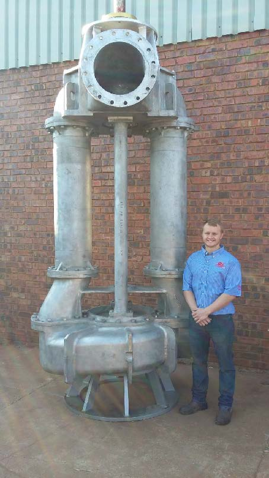

About UsО компании

The PDAC International Convention, Trade Show & Investors Exchange is the world's leading convention for people, companies and organisations connected with mineral exploration, drawing over 900 exhibitors and 22,000 attendees from 100+ countries…
Международная конференция, выставка и инвестиционная биржа PDAC — ведущее в мире мероприятие для компаний и специалистов в области геологоразведки, собирающее более 900 экспонентов и 22 000 участников из более чем 100 стран…

Electrical submersible pumps are, once installed, usually out of sight and out of mind — with little attention paid to their real operating costs. We look at total cost of ownership rather than purchase price alone…
После установки погружные электронасосы обычно скрыты из виду, и их реальная стоимость эксплуатации редко оказывается в центре внимания. В статье рассматривается совокупная стоимость владения, а не только цена покупки…
Our pump solutions can be custom made to your pumping requirements. Don't see a solution to your current pumping problem?
Наши насосные решения изготавливаются индивидуально под задачи заказчика. Не нашли готовое решение для своей задачи?